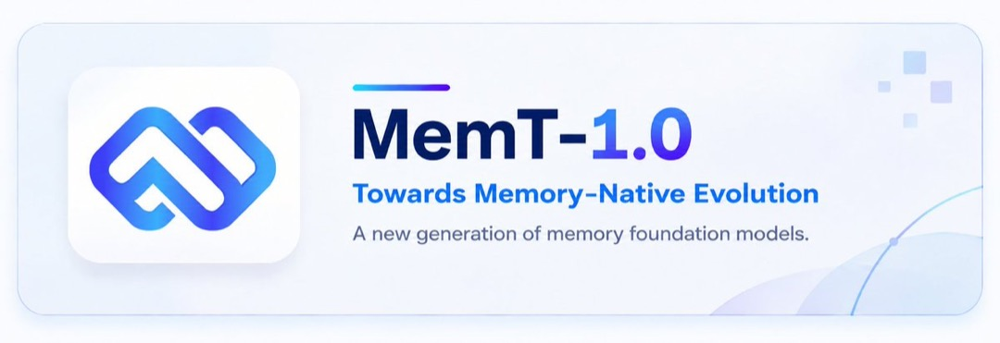
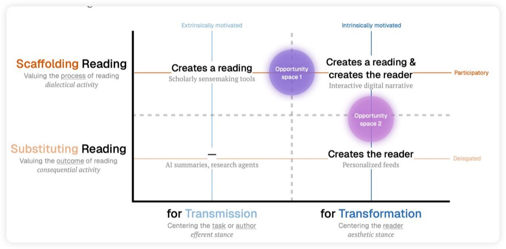
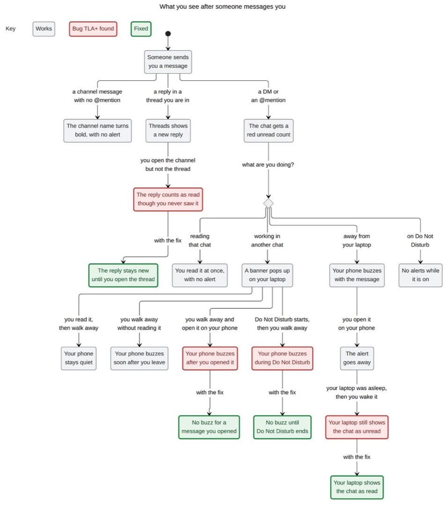
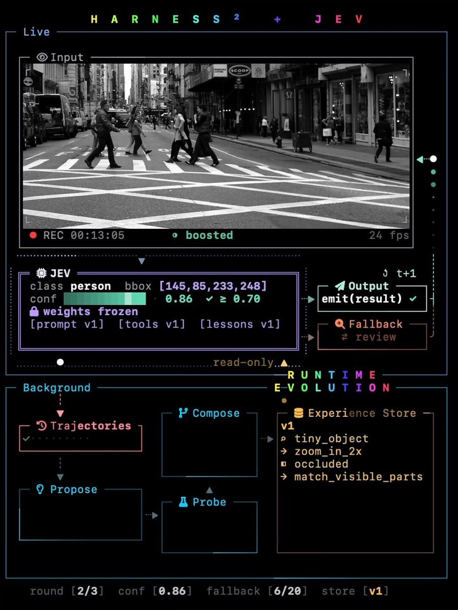
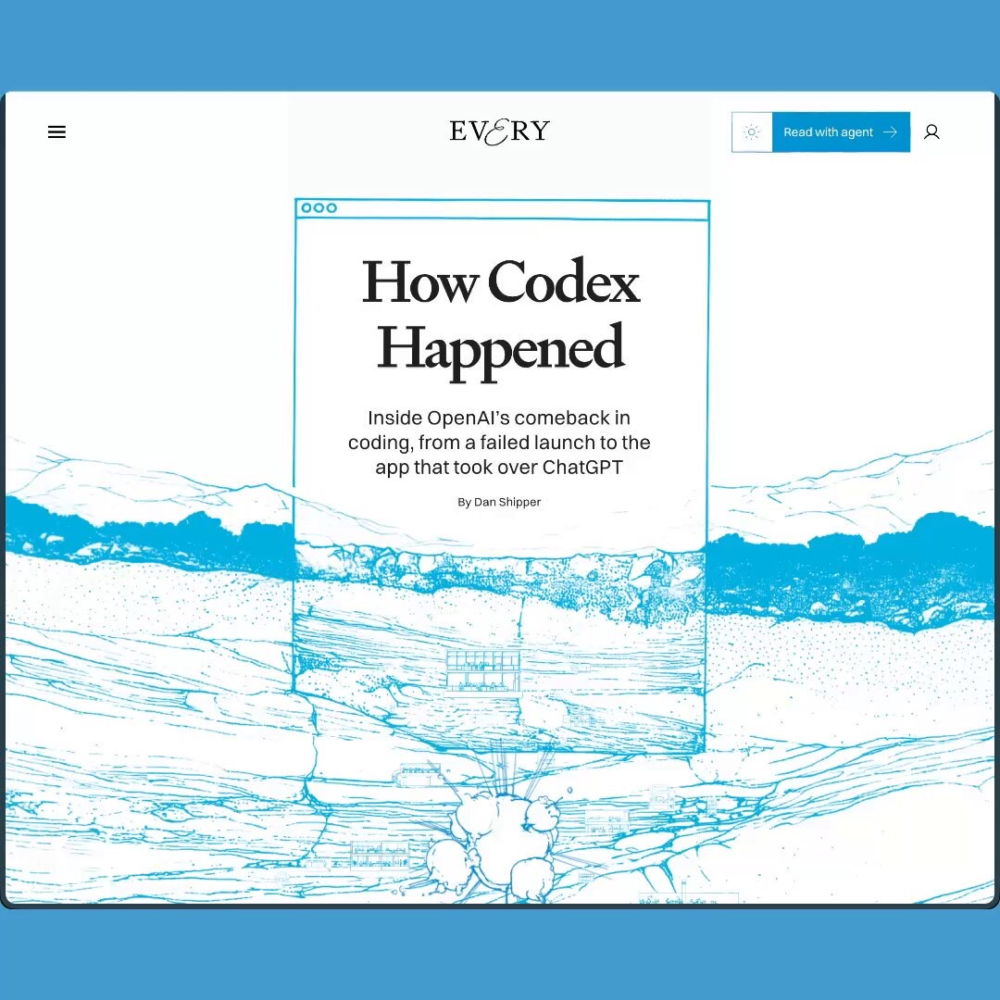
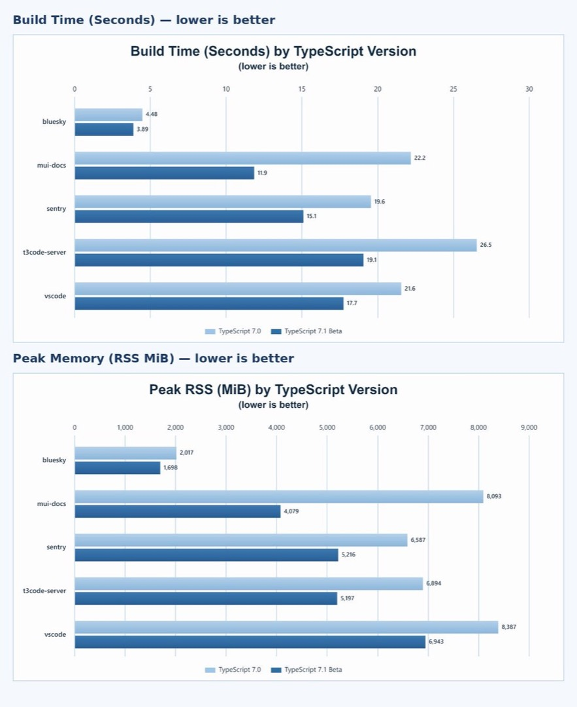
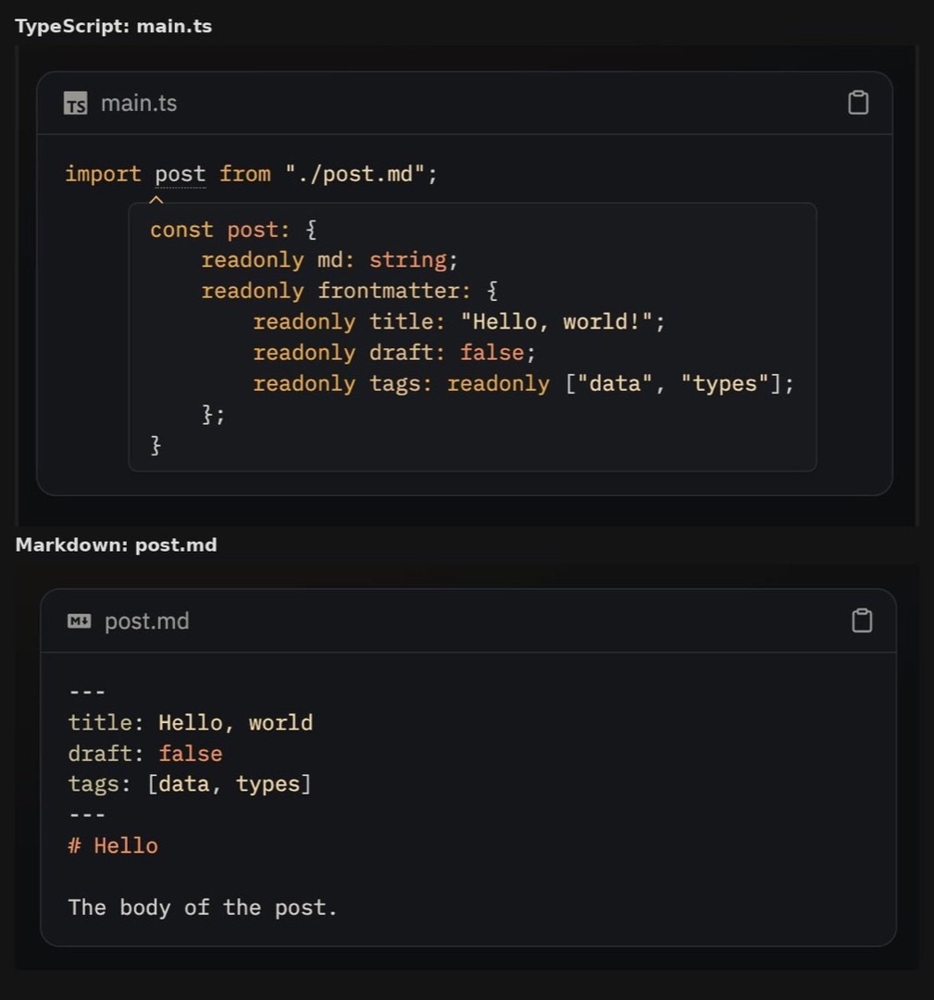
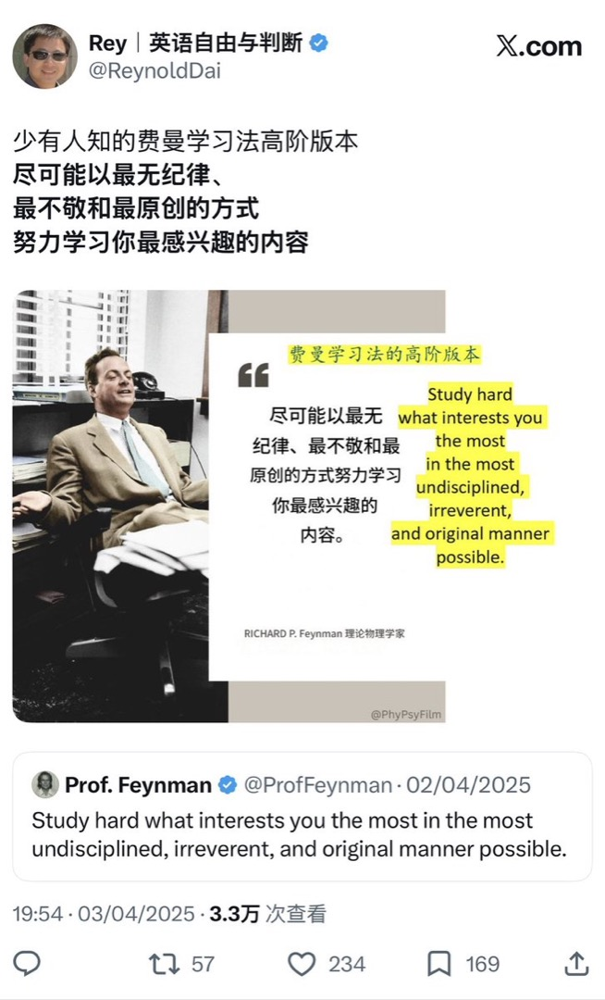

本期速览
01 MemOS 发布记忆原生模型 MemT
05 DeepInfer缓存72小时降推理成本
07 用状态图加TLA+形式化验证找bug
09 Codex桌面版不做代码编辑器
10 TS 7.1 借插件直接检查Vue文件
01｜MemOS 发布记忆原生模型 MemT
来源（X） · @yanhua1010 · 2026-10-21 14:28
6 月我写 Claude Code 记忆的时候推荐过两个框架，其中一个就是 MemOS。
这一年我折腾过的记忆方案，Obsidian、记忆文件、CLAUDE.md，说到底都是外挂：把东西记在模型外面，每次开工再塞回上下文。
MemOS 团队刚开源的 MemT 1.0，干脆把记忆做进了模型里。官方管它叫“记忆原生大模型”，记忆的写入、更新和读取直接在模型自己的计算里完成，历史再长，存下来的记忆状态也不会变大。
技术报告里有几个数我觉得挺有意思：
1. SWE-bench Verified 上，他们把过去任务总结出的经验存进模型记忆，同一个任务连跑三次都成功的比例从 54% 提到了 62.8%。跟把同样的经验直接写进提示词比，效果差不多，区别是这些经验不占上下文。
2. 历史长度到 128K 时，Nano 端到端比全量上下文快 1.86 倍，每条会话要存的东西小 66 倍。到 256K，快到 3.99 倍。
代价报告里也写了：记忆状态大小固定，聊得越久，早期细节越容易被压掉，要精确回忆的任务会吃亏。历史很短的时候，它反而比全量上下文慢。
这次开源了 36B 的 Nano（激活 3B）和 288B 的 Flash（激活 17B）👇
https://huggingface.co/collections/MemTensor/memt-1
引用内容
MemOS @MemOS_dev
中文译文
大语言模型能否保留过往交互中的信息，并在下一个任务中重复利用？
隆重介绍 MemT-1.0：迈向记忆原生演化。
这一次，我们直接将记忆构建到了模型架构之中。
我们的 MemT-1.0-Nano 和 MemT-1.0-Flash 将持久记忆作为模型计算的一部分，使信息能够跨交互传递。
原文
Can large language models retain information from past interactions and reuse it in the next task?
Introducing MemT-1.0: Towards Memory-Native Evolution.
This time, we've built memory directly into the model architecture.
Our MemT-1.0-Nano and MemT-1.0-Flash make persistent memory part of model computation, carrying information across interactions.

02｜开源压价不威胁闭源模型利润率
来源（X） · @dotey · 2026-10-21 12:12
fin 认为不会。
第一个理由：价格降，成本降得一样快。
每代新芯片让同样的电多产出约一倍的 token，软件优化每年再砍一半成本，利润率守得住。1GW 数据中心跑旗舰模型一年能卖 800 亿美元，硬件摊销每年只要约 80 亿。
第二个理由：便宜模型和旗舰模型是两个市场。
开源只能在低端打价格战，旗舰层只有 OpenAI 和 Anthropic 在争，价格稳。
第三个理由：开源占 token 用量 20% 以上，按实际花的钱只占 5% 到 10%。
模型越强，能接的长任务越多，需求还会涨。
引用内容
fin @fi56622380
中文译文
原文
03｜SKY-001 专攻工程世界模型
来源（X） · @Gorden_Sun · 2026-10-20 15:35
它把复杂的工程拆分成两步：先用分层合成器把整辆车、整栋楼自顶向下逐层拆解成零部件或独立房间；再交给建造世界模型，像人类工程师画 CAD 图或施工图一样，一步一步推演出完整的装配和绘图序列。
最终效果就是性能跟前沿LLM差不多，但是价格便宜很多。目前没开放使用，实际效果还得看真实生产验证。
官方介绍：https://skyfall.ai/blog/introducing-sky-001
引用内容
Sam Pasupalak @spisallyouneed
中文译文
隆重介绍 SKY-001，首个工程世界模型。
在 CAD 和 BIM 任务上，它超越了 GPT-6 Astra 以及我们测试过的每一个前沿模型：
-> 速度提升 51-125 倍
- > 成本降低 150-210 倍
-> IOU 高于所有前沿模型
SKY-001 让你在建造之前就能想象出一个物理对象。
18 个月的工作成果。由 Maluuba 深度学习实验室的团队打造（已被 @MSRResearch 收购）。
首个"AI 通用工程师"将成为自主制造的基石。
原文
Introducing SKY-001, the first Engineering World Model.
On CAD and BIM tasks, it beats GPT-6 Astra and every frontier model we tested:
-> 51-125x faster
- > 150-210x cheaper
-> Higher IOU than all frontier models
SKY-001 lets you dream a physical object before you build it.
18 months of work. Built by the team out of Maluuba's deep learning lab (acq. by @MSRResearch).
The first ‘AI General Engineer’ will be the backbone for Autonomous Manufacturing.
04｜AI辅助阅读工具三类设计框架
来源（X） · @lijigang · 2026-10-21 11:20
论文中针对阅读提出了一个非常有意思的取景框架。
我们一直有「六经注我」 vs 「我注六经」的分类，可以理解为「以读者为中心」 vs 「以作者为中心」。
现在有了 AI，会带来什么变化？
这论文加了一个维度：「AI 替我读」vs「AI 陪我读」。
两者一结合，就出现了四象限。可以把当下的 AI 工具和应用场景放置其中进行分析。
针对「AI 陪我读」这个有意思的话题，又给了三个工具：
第一类是跑鞋型。
跑鞋不改变你跑步的方式，它减少脚和地面之间的摩擦，让你跑同样的路更省力。对应到阅读，就是让你用同样的方式读，但读得更顺。术语弹窗让你不必中断去查词典，高亮系统替你标出哪些段落值得细读、哪些可以略过，自动排版让长文档更容易扫视。你还是在读，读的动作没有变，只是路面变平了。
第二类是哑铃型。
哑铃的作用不是让你省力，恰恰相反，它故意给你加负重，目的是让你变强。对应到阅读，就是在阅读过程中设置有益的阻力。比如读完一段之后要求你用自己的话复述，再往下翻之前先让你预测作者接下来会说什么，或者定期抛出问题检验你是否真的理解了而不只是眼睛扫过去了。这些动作会让阅读变慢，但慢下来的那部分恰好是理解发生的地方。
第三类是滑雪板型。
滑雪板不是让你走路更快，也不是让你腿更有力，它让你做到一件走路根本做不到的事——在雪上滑行。对应到阅读，就是让你和文本之间产生以前不可能的交互方式。把一篇论文的段落拖到二维空间里重新排列，让两篇论文的论证链条并排对照，在阅读痕迹上回溯自己三个月前读同一篇时关注了什么、现在关注了什么。这些不是「读得更快」或「理解得更深」，而是一种全新的阅读动作。
有了这个框架，就像是拥有了一张地图。针对自己的需求，可以在对应的象限中寻找解法。

05｜DeepInfer缓存72小时降推理成本
来源（X） · @bojie_li · 2026-10-21 10:51
这次开源的 DeepInfer 可以做到缓存 72 小时，别人家都是缓存 5 分钟或者 1 小时。对 Claude，缓存 5 分钟的情况下很多比较长的工具调用就会导致 cache miss，缓存 1 小时的情况 usage limit reset 也会导致 cache miss，所以我在每次 5 hour limit 之后都不会 resume 原有的 agent，而是走 compaction 流程重新开新的 agent，否则几十个 agent 一启动就会耗掉几十刀的 token。
infra 优化还有非常多空间可做！感谢 DeepSeek 的贡献。
引用内容
DeepSeek @deepseek_ai
中文译文
🚀 隆重介绍 DeepInfer，我们的自研推理框架，现已完全开源！
以高吞吐和低延迟大规模驱动 DeepSeek-V4.1-Flash。我们分享生产环境技术栈，帮助社区降低算力成本、减少能源消耗，让 AI 更加普惠。
🔗 https://github.com/deepseek-ai/DeepInfer
1/4
原文
🚀 Introducing DeepInfer, our in-house inference framework, now fully open source!
Powering DeepSeek-V4.1-Flash at scale with high throughput and low latency. We’re sharing our production stack to help the community lower compute costs, reduce energy use, and make AI more affordable.
🔗 https://github.com/deepseek-ai/DeepInfer
1/4
06｜GLM5.3 Flash审查率降到1%
来源（X） · @zengjiajun_eth · 2026-10-21 02:24
GLM 的审查不在一个方向上，而是散落在整段回答里。我们在两台 DGX Spark 上训练了三轮：照资料写（学会了编造，弃用）→ 自蒸馏（没过关卡）→ 在它自己的回答上做 DPO，逐条核查事实。
结果：审查率 65% → 1%，没训练过的新话题 59% → 0%，事实准确且讲清各方说法的回答 20% → 80%。编程、考试、智能体任务基本不变。
视频讲了全过程 👇
LoRA 开源：http://huggingface.co/zjj1993/GLM-5.3-Flash-uncensored-china-LoRA
07｜用状态图加TLA+形式化验证找bug
来源（X） · @0xlangeai · 2026-10-21 13:49
先让 agent 把你的代码画成一张状态图，就是用户从哪一步能走到哪一步、每一步什么状态。
再用她做的 pstack 里新出的 /create-formal-verification-skill，生成一套形式化验证，比如用 TLA+ 去跑。
形式化验证说白了，就是用数学证明某些规则必须一直成立，比如「没付款就不能发货」。不是靠测几个用例碰运气，而是把所有可能走到的路都检查一遍。
以前这东西没普及，是因为建模和写证明太难，业务一改模型就对不上。现在交给 agent 写，门槛低了很多。她说自己用这个 skill 拿 TLA+ 建模，已经找出好几个 bug。
好处是两头的：你更懂自己的代码和用户流程该怎么走，也能在用户撞上之前把问题修掉。
引用内容
lauren @poteto
中文译文
让你的智能体绘制一张状态图（如图中假想示例），然后使用你用 pstack 制作的 /create-formal-verification-skill 技能，通过类似 TLA+ 的方式来发现 bug，这真的非常酷。你既能更好地理解自己的代码以及用户流程应该如何运作，又能修复用户本来会遇到的问题。
原文
there's something really cool about asking your agent to draw a statechart (hypothetical example in this image), then using the /create-formal-verification-skill you made with pstack to find bugs through something like TLA+. you can both understand your code better and how the user flow should work, and fix issues users would otherwise see

08｜AI自写图像预处理补视觉短板
来源（X） · @yyyole · 2026-10-20 23:12
AI 看不清图片，居然开始自己写代码“补短板”了！！
图片太暗，就自己调对比度；
目标太小，就自己裁切放大；
判断没把握，就调整提示词再试。
连怎么处理图片、怎么调用工具，都可以自己改！
国外一大神把 Google Research 开源的 Harness² 框架接入 Jev，做了一个视频内容识别的demo。
整个系统可以识别街道上的行人，把“小目标”、“放大两倍”、“遮挡”、“匹配可见部分”等处理经验纳入流程，再交给模型判断。
底层模型能力不变，但模型在做任务的过程中，一直在被持续的调教！
大概看明白了，这是解决了一个很关键的问题：
模型明明有能力，任务为什么总做不好！

09｜Codex桌面版不做代码编辑器
来源（X） · @dotey · 2026-10-21 11:43
当时流行的都是 Cursor 这样的 IDE 内置聊天，但 Tibo 偏偏做了一件意外的决定：做一款原生桌面应用。
他看到，模型能完成的任务越来越长，人们很快会同时开好几个智能体，一整天都和它们待在一起。他说：那就必须是一个非常丰富的界面，而不是一个 1970 年代的纯文本窗口。
为此，他找来了设计师、程序员、前创业者 Andrew Ambrosino。
他们没有像 Cursor 那样从 VS Code Fork 一个版本出来，虽然那是当时的标准做法；他们选择了参考聊天软件：左边是任务，每个任务一个智能体；右边是对话。
然后，是最冒险的决定：应用里不放代码编辑器。
想改代码？只能让智能体去改。
因为一旦能敲代码，你就会期待编辑器的一切，一个四人小团队根本做不到。Codex 不可能靠当一个糟糕的编辑器取胜，它必须好到让你根本不想念编辑器。
每天 Ambrosino 一进办公室就挨个问同时：“你在主力用 Codex 吗？”
一开始，所有人的回答都是：没有。
有同事在 Slack 上抱怨，就为了替换一句话，还得去提示 Codex。连 Ambrosino 自己也写道：不能编辑文件，是这次发布里我最怀疑的一点。
2025 年 11 月，Google 发布了 Antigravity，一款把智能体和完整编辑器结合在一起的工具。主导它的，正是离开 Windsurf 的那批人。
Ambrosino 都开始自我怀疑：“我们是不是犯了一个巨大的错误？”
更要命的是模型。就算应用做完了，以当时模型的质量，它也“无法发布”。
然后，事情开始变了。11 月，GPT-5.1-Codex-Max 发布，能连续编码好几个小时。12 月，GPT-5.2-Codex 发布。独立的模型线，让团队不用顾虑八亿 ChatGPT 用户，可以迭代得更快。
12 月，那位抱怨的同事改口了：我现在大多数改动，只留一条行内评论，飞快。Glaese 说：5.2 是个转折点。
那年圣诞假期，整个行业迎来拐点：开发者们用 Opus 4.5 和 GPT-5.2 从头到尾搭出完整的应用，一行代码都不用自己写。
2 月，Codex 应用在 OpenAI 内部流行开来。研究员 Noam Brown 说，他已经完全切换。Brockman，一个忠实的终端加 Emacs 用户，说回到老工作流，感觉像穿越回了过去。Altman 后来说，这是他们做过的最受内部喜爱的产品。
可是别忘了，Codex Cloud 当初在内部也很受欢迎，结果一发布，就扑了街。
这一次，会不一样吗？
----
完整的内容可以看原文 https://every.to/p/how-codex-happened ，这个视频是我基于原文相应章节去搜集资料剪辑的。
引用内容
Dan Shipper @danshipper
中文译文
Codex 是科技史上最重要的未被充分讲述的故事之一。
一年前，它只是 @OpenAI 一个安静角落里的一个不起眼的努力。它的云产品还没找到 PMF（产品市场契合度），团队正从零开始重新出发。
不到 12 个月后：
- Codex 从内部吞噬了旗舰 ChatGPT 桌面应用（它实际上以 com.openai.codex 的形式运行在你的 Mac 上）
- Codex 和 ChatGPT for Work 在工程和知识工作中实现了 4000 万+ 周活跃用户
- 其负责人 @thsottiaux 被提升为掌管 OpenAI 所有核心产品，包括 ChatGPT、Codex 和 API
他们是怎么做到的？
他们训练了自己专属的模型线，与 ChatGPT 分开，研究人员和产品构建者坐在同一个团队里
他们在一年内构建了四个不同的产品（云 → 终端 → IDE 侧边栏 → 一个完全没有代码编辑器的桌面应用），每一次模型飞跃都让新的形态成为可能
他们用 Codex 来构建 Codex——这样少数几个人就能在几周内验证一个新产品，而不是在会议上争论不休
我全程见证了这段历程——从他们失败的 Cloud 发布，到 GPT-5 发布前夜的 OpenAI 办公室，再到 Codex 接管 ChatGPT 那一天。
我花了几个月时间采访了 @gdb、@thsottiaux、@embirico、@mia_glaese、@aambrosino 和 @edbayes，深入了解这一切是如何发生的。
以下是那个重塑 OpenAI 的团队的完整幕后故事，来自闭门采访：
https://every.to/p/how-codex-happened
我们正在推动这类故事讲述方式的边界。
这篇文章完全是 agent 原生的——设计为在 ChatGPT 的应用内浏览器中与你的智能体一起阅读：
- 每份采访记录全文收录：点击任何引语，你（或你的智能体）都能看到它来自的确切对话内容。
- 专为你的智能体探索而设计：让你的智能体提取适合你团队的产品经验、交叉审视访谈记录，或找出我在撰写时遗漏的洞察。
这是一个关于软件未来的故事——专为与智能体一起阅读而构建：
https://every.to/p/how-codex-happened
原文
Codex is one of the most important untold stories in the history of technology.
A year ago, it was a scrappy effort in a quiet corner of @OpenAI. Its cloud product hadn’t found PMF, and the team was starting over from scratch.
Less than 12 months later:
- Codex swallowed the flagship ChatGPT desktop app from the inside (it literally runs as com.openai.codex on your Mac)
- Codex and ChatGPT for Work hit 40M+ weekly users across engineering and knowledge work
- Its leader @thsottiaux was elevated to run all of OpenAI’s core products, including ChatGPT, Codex, and the API
How did they pull it off?
They trained their own dedicated model line, separate from ChatGPT, with researchers and product builders sitting on the same team
They built four different products in a single year (cloud → terminal → IDE sidebar → a desktop app with no code editor at all) as every model leap made a new form factor possible
They used Codex to build Codex—so a handful of people could prove a new product in weeks instead of arguing for it in meetings
I had a front-row seat to the whole arc—from their failed Cloud launch, to OpenAI’s offices the night before GPT-5 dropped, to the day Codex took over ChatGPT.
And I spent months interviewing @gdb, @thsottiaux, @embirico, @mia_glaese, @aambrosino, and @edbayes to get inside how it all went down.
Here is the full, behind-closed-doors story of the team that remade OpenAI:
https://every.to/p/how-codex-happened
We’re pushing the boundaries of how stories like this are told.
This piece is completely agent-native—designed to be read alongside your agent inside ChatGPT’s in-app browser:
- Every interview transcript is included in full: Click any quote and you (or your agent) can see the exact conversation it came from.
- Built for your agent to explore: Ask your agent to pull out product lessons for your team, cross-examine the transcripts, or find insights I missed when writing the piece.
It’s a story about the future of software—built to be read with an agent:
https://every.to/p/how-codex-happened

10｜TS 7.1 借插件直接检查Vue文件
来源（X） · @lencx_ · 2026-10-21 09:53
此外还包含面向工具的新 API（Snapshots、虚拟文件系统）、ambient module 中的 Import Attributes、Source Phase Imports、--target es2026 及一批新库方法。性能上相对 7.0 有 1.2x–1.9x 加速，同时对部分类型检查更为严格。
原文：https://devblogs.microsoft.com/typescript/announcing-typescript-7-1-beta/


引用内容
TypeScript @typescript
中文译文
TypeScript 7.1 Beta 现已发布！本次新增了预览 API、内容映射器支持、新功能以及一些出色的优化。快来试试并给我们反馈吧！https://devblogs.microsoft.com/typescript/announcing-typescript-7-1-beta/
原文
TypeScript 7.1 Beta is now available! Now with a preview API, content mapper support, new features, and some great optimizations. Give it a try and give us some feedback! https://devblogs.microsoft.com/typescript/announcing-typescript-7-1-beta/
11｜Kimi K3以注意力残差改架构
来源（X） · @ReynoldDai · 2026-10-21 12:25
“尽可能以最无纪律、
最不敬和最原创的方式
努力学习你最感兴趣的内容”

引用内容
晚点 LatePost @latepostnews
过去二十年，中国互联网公司的权力，大多随着商业战果分配。但如今，一批三十岁上下的技术人，正在通过另一条路径进入中国最核心科技公司的权力中心：不必等到产品取得商业成功，他们就开始掌握重要的研发决策权，由此影响数百名研究员的工作，以及数以亿计的算力如何投入。
- 2026 年 3 月，几名 Kimi 的年轻研究员希望把一项叫 Attention Residuals 的新技术放进正在研发的下一代旗舰大模型 K3。这个想法最初来自 Kimi 的研究员苏剑林，业内人称 “苏神”。这个想法来自他读完 DeepSeek 的 mHC 论文后的灵光一现：既然是在做加权求和，何不用 Attention？
- 苏剑林很快写了一个简化版本，效果很好。但完整版需要保存各层信息，还要在设备间传递，训练团队算过后发现，以当时的资源根本无法承担。张宇和当时只有 17 岁的陈广宇几乎只用了一个晚上，提出了 Block AttnRes（分块注意力残差）设计：把模型的多个层分成 8 个组（Block），先汇总组内信息，再在组间做 Attention。这一方案把额外开销控制在 5% 以内，同时带来了约 20% 的训练效率提升。
- 最后杨植麟拍板，同意 K3 推迟开训，为团队留出验证时间。3 月 16 日，Kimi 公开了这项研究，四个月后，拥有 2.8 万亿参数的 K3 发布，Attention Residuals 成为其重要架构之一。
- 这个故事里，提出新想法的是一名远程工作的研究员，将它变成可行方案的包括一名 17 岁高中生和一名年轻博士；训练、推理和 Infra 团队则在周末的深夜合力解决了大规模工程的问题。最后，作为 CEO 的杨植麟拍板决定，为它改变公司最重要模型的训练日程。新一代 AI 管理者的能力，不只是自己懂技术，还包括识别他人的技术判断，并将其变成整个组织的 bet。
- 智谱的 Coding 转向，同样不是某个负责人一开始就确定的战略。2025 年初，DeepSeek-R1 发布后，智谱感到了落后的压力，模型效果不及预期，行业又陷入价格战。唐杰召集十几位核心技术人员讨论下一步方向，00 后、尚未博士毕业的曾奥涵提出做 Coding，但这个方向在智谱内部并未成为共识。
- 唐杰没有当场决定，而是让不同团队分头探索。转折出现在 2025 年 4 月，智谱发布的一批 320 亿参数模型中，有一个版本加强了工程代码和函数调用能力，内部测评与使用反馈让 Coding 获得更多认可。七月，GLM-4.5 发布，编程成为市场反馈最好的能力之一；到十二月，智谱 CEO 张鹏称，这项业务的年度经常性收入已经超过一亿元人民币。押注 Coding，成为智谱成立以来最重要的战略决策之一。这不是一个人的决定，而是一群年轻技术人员的判断，经过不同团队的探索和验证，逐渐成为公司的战略选择。
- 小米 MiMo 的路径更激进一些。2025 年 4 月，小米发布第一款 7B 模型，罗福莉加入后，和团队决定同时训练一个数千亿参数的模型和一个万亿参数的模型，后来分别成为 MiMo-V2-Flash 和 MiMo-V2-Pro。当时团队只有几十人，大部分研究员没有训练过大模型，有经验的人中，不少也只做过 7B、14B。一位同行感叹，在他看来，按照更稳妥的路线，应该先把数千亿参数模型训出来，再决定是否继续扩大，但罗福莉不想再训一个“同样的模型”，既然继续 scaling，就要再往前走，而 1T 已经接近当时团队已有算力能尝试的极限。
- 罗福莉能够作出这样的决定，与小米给予的技术自主权有关。雷军大约每两周听一次汇报，但通常不干预具体技术决策。做什么模型、采用什么路线，很大程度由罗福莉和团队决定。
- 训练开始后，loss 升高、激活值异常、不同专家模块的负载失衡等问题接连出现，团队停下来排查，做数据和预训练的人开始参与后训练，负责训练框架和推理 Infra 的人也一起解决问题。罗福莉说，这些变化很少来自正式调配，更多是研究员根据兴趣自然流动。一位年轻研究员说，自己从学校来到 MiMo ，几乎没感觉环境有什么变化，“就感觉跟实验室一样”。两款模型最终完成，小米也由此进入能够训练万亿参数基座模型的公司行列。
- 获得权力之后，这批年轻的技术领军者要面对的第一个现实课题，是如何招人、管人。在顶尖人才极度稀缺的大模型领域，研究员选择公司，本质上是在选择一个能理解自己、值得追随的负责人。技术声望天然自带引力。杨植麟创业前曾在 Meta AI、Google Brain 实习，是 XLNet、Transformer‑XL 的共同第一作者。姚顺雨加入腾讯前是 OpenAI 的研究员，参与 Deep Research 和 Operator 两个核心项目。腾讯招聘团队人士说，姚顺雨加入后，混元在校招上的吸引力明显提升。
- 相比上一代互联网管理者，他们也有意或无意地消解着权力带来的距离感。混元成员叫姚顺雨“姚哥”，他会偶尔办午餐会，也会在全员群里临时组篮球局，Hy 4 Preview 发布后，姚顺雨直接给研究员集体放了一周假。Kimi 员工把杨植麟叫作 KK，研究员可以在群里直接抱怨产品不好用、算力不够，也会用他的表情包开玩笑。昵称、兴趣和轻松的氛围，在互联网公司并不算新鲜。但年轻的研究员们会从这些日常细节里，判断负责人是不是 “同路人”、好不好相处。而一旦进入具体工作，他们真正核心的诉求，是自己的想法究竟能有多大空间。
- 不过，研究员能有多少探索空间，也取决于他们的负责人获得了怎样的支持。2026 年 3 月，林俊旸得知阿里 Qwen 团队可能被拆分，原本整合在一起的预训练、后训练等团队将被重新划分，这与他一直坚持的技术主张相冲突。他在群里留下“无颜再带领大家”的感言，提出离职。在大公司，技术成绩可以带来权力，却未必足以守住权力。技术负责人能作出哪些决定，既取决于最高层的授权，也取决于他在复杂的组织网络中做政治与利益交换的能力。
- 姚顺雨在腾讯采取了另一种方式。混元自己的预训练模型还没准备好时，他先派后训练骨干去帮助元宝优化接入的 DeepSeek。他认为，维护好元宝的产品体验和用户基本盘，对混元后续研发同样重要。这种“向外让渡支持”的做法，后来换来了腾讯内部多个核心产品和部门在混元新模型发布时主动支持。
- 他们因技术获得权力，又必须运用权力，保护技术所需要的自由。同样，他们想让自己和研究者摆脱管理的束缚，也得先学会如何管理。
- 唐杰曾给 AI 时代的能力排过一个次序：“认知＞格局＞技术＞管理”。管理在最末，技术倒数第二。1995 年出生的 LibLib 创始人陈冕也说，管理变得前所未有地不重要，唯一目的是让符合业务特点和要求的人留下来。这群三十岁左右的年轻人，被时代推上了掌管百亿算力与庞大组织的权力位置，却本能地排斥 “管理”——但他们真正排斥的，或许并非管理本身，而是过去大公司里的平庸、官僚与迟缓。
- 但“给他卡就够了”，只是他们对理想研究环境最朴素的描述。但如何争取这些卡、决定把卡给谁，以及为最后的结果负责，却是一场极其现实、艰苦的工作。认知、格局、技术、管理。在真实的商业战场上，这四种能力其实根本无法剥离。认知是判断做什么、不做什么，这既需要扎实的技术体感，也需要看清终局的格局；而要把判断变成现实的结果，离不开管理与组织协作。把管理排在最后，不会自动成为好管理者；把管理放在最前，也一定不是好管理者。
- 如大半个世纪前德鲁克所阐述的，管理的本质，是让每个人的长处得到发挥，让不同的人能够共同做出凭一己之力无法完成的事。想要实现这一切，第一步，或许要从不再羞于谈论 “管理” 开始。
#ai #晚点latepost